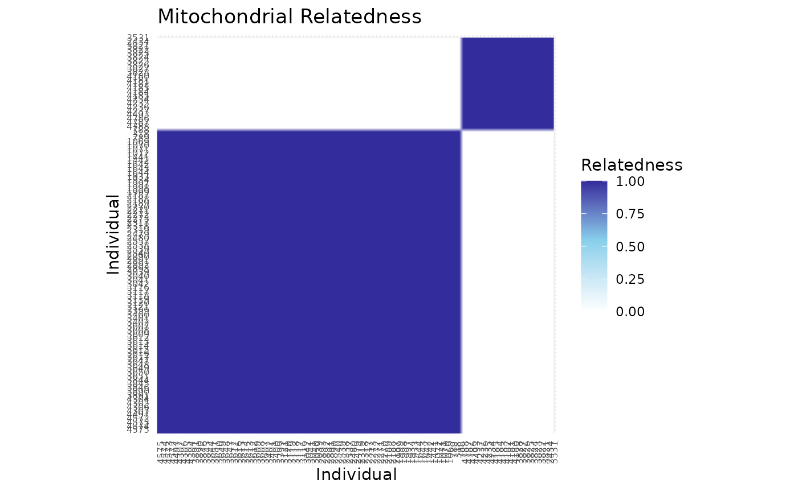

Visualizing Relatedness Matrices with `ggRelatednessMatrix()`
Source:vignettes/v2_matrix.Rmd
v2_matrix.RmdIntroduction
This vignette demonstrates how to calculate and visualize relatedness matrices for animal pedigrees using functions from the BGmisc and ggpedigree packages. We focus on Kluane Red Squirrel Project data, but the workflow generalizes to any pedigree dataset.
We will use the new ggRelatednessMatrix function to create ggplot2-based heatmaps of relatedness matrices, inspired by the approaches in the original squirrel population analyses.
Data Preparation
First, load pedigree data and required libraries. The example data is from the Kluane Red Squirrel Project, which has been running since 1987. The data are available on Dryad at https://doi.org/10.5061/dryad.2z34tmpr3.
library(ggpedigree)
# Load the example data
data("redsquirrels")Calculating Relatedness Matrices
Here we show how to compute additive genetic and mitochondrial relatedness matrices for a target family, as in the red squirrel analysis.
sumped <- summarizePedigrees(redsquirrels,
famID = "famID",
personID = "personID",
nbiggest = 5
)
# Set target family for visualization
fam_filter <- sumped$biggest_families$famID[3]
# Filter for the largest family, recode sex if needed
ped_filtered <- redsquirrels %>%
recodeSex(code_female = "F") %>%
filter(famID == fam_filter)
# Calculate relatedness matrices
add_mat <- ped2add(ped_filtered, isChild_method = "partialparent", sparse = FALSE)
mit_mat <- ped2mit(ped_filtered, isChild_method = "partialparent", sparse = FALSE)Visualizing Relatedness Matrices
The ggRelatednessMatrix function plots a relatedness matrix as a heatmap, with options for clustering and color customization. This approach mirrors the style of plots produced in the original red squirrel data analysis.
Plot additive genetic relatedness
p_add <- ggRelatednessMatrix(
add_mat,
config = list(
color_palette = c("white", "orange", "red"),
scale_midpoint = 0.55,
cluster = TRUE,
title = "Additive Genetic Relatedness",
text_size = 15
)
)
p_add
Plot mitochondrial relatedness
p_mit <- ggRelatednessMatrix(
mit_mat,
config = list(
color_palette = c("white", "skyblue", "darkblue"),
scale_midpoint = 0.55,
cluster = TRUE,
title = "Mitochondrial Relatedness",
text_size = 6
)
)
p_mit
Customization Options
You can adjust clustering, color scales, labels, and more using the config list. For example, to turn off clustering:
p_add_noclust <- ggRelatednessMatrix(
add_mat,
config = list(cluster = FALSE, title = "Additive Relatedness (No Clustering)")
)
p_add_noclust
Comparison to Base R and Other Approaches
For comparison, here is how the same matrix would be plotted in corrplot, as in earlier squirrel analyses:
if (requireNamespace("corrplot", quietly = TRUE)) {
corrplot::corrplot(
as.matrix(add_mat),
method = "color",
type = "lower",
col.lim = c(0, 1.25),
is.corr = FALSE,
title = "Additive Relatedness (Base R)",
order = "hclust",
col = corrplot::COL1("Reds", 100)
)
}
Conclusions
The ggRelatednessMatrix function provides a flexible and visually appealing way to explore patterns of genetic and mitochondrial relatedness within families. This workflow integrates seamlessly with tools from BGmisc and ggpedigree, supporting reproducible, publication-quality visualization for quantitative genetic analysis.